library(here)
library(tidyverse)
library(tidymodels)
source(here("R", "prepare_data.R"))
source(here("R", "plots.R"))
theme_set(theme_bw())
tidymodels_prefer()Exploratory Data Analysis
Look at the spectra and the soil properties before modelling anything.
SPECTRA_DIR = here("data/RT_spectra")
SOIL_PROP_FILE = here("data/RT_wetchem_soildata.csv")Getting data
This loads the same tibble 2-loading-data.qmd builds, in one call.
data <- prepare_rt(SPECTRA_DIR, SOIL_PROP_FILE)Summary statistics
Three tools summarize the same tibble here. summary() is base R’s quick per-column stats. glimpse() trades full statistics for seeing every column at a glance. skimr::skim() adds missingness and a spark histogram per column, worth it once a dataset has more than a handful of properties. The last two are shown but not run here. Both dump too much to read usefully once wavenumber columns are involved. Try them yourself in the R console.
data |>
select(!starts_with("wn_")) |>
summary() smp_id source clay_perc pH_H20
Length:70 Length:70 Min. : 0.00 Min. :3.348
Class :character Class :character 1st Qu.:15.99 1st Qu.:5.544
Mode :character Mode :character Median :21.09 Median :6.094
Mean :22.61 Mean :6.369
3rd Qu.:30.39 3rd Qu.:7.470
Max. :49.30 Max. :8.570
NA's :1
carbon_tot_perc carbon_org_perc potassium_cmolkg phosporus_mgkg
Min. : 0.09199 Min. : 0.08328 Min. :0.04737 Min. : 0.01929
1st Qu.: 0.82700 1st Qu.: 0.47918 1st Qu.:0.28902 1st Qu.: 2.92316
Median : 1.81076 Median : 1.12734 Median :0.43173 Median : 5.78705
Mean : 2.75553 Mean : 2.49940 Mean :0.56347 Mean : 20.17018
3rd Qu.: 2.85240 3rd Qu.: 2.35857 3rd Qu.:0.80041 3rd Qu.: 13.01283
Max. :49.10375 Max. :49.10375 Max. :2.83900 Max. :243.00000
NA's :1 NA's :1 NA's :1 NA's :36 glimpse(data |> select(!starts_with("wn_")))data |>
select(!starts_with("wn_")) |>
skimr::skim()Soil properties histogram
A single histogram
NoteBuilding a plot in layers
ggplot2 builds a plot in layers. ggplot() sets up the data and the mapping from columns to visual properties through aes(). Each geom_*() adds one layer: points, lines, histograms. The ggplot2 book covers every layer this course uses and plenty it doesn’t.
clay_perc’s histogram is roughly the shape you’d expect: no long tail, nothing to fix.
data |>
ggplot(aes(x = clay_perc)) +
geom_histogram()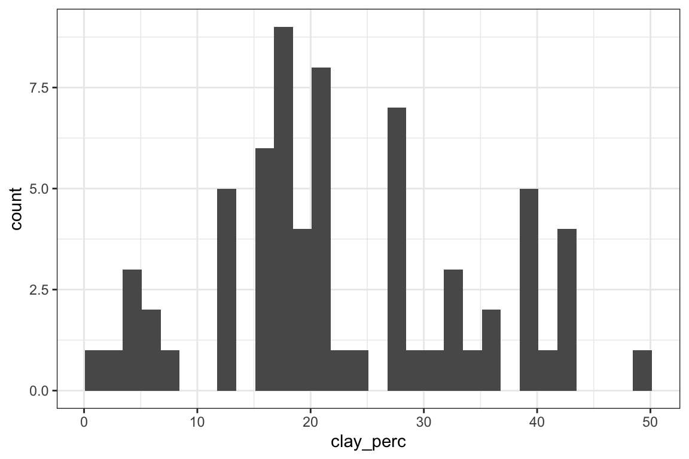
potassium_cmolkg isn’t so well-behaved. The QQ-plots below make the case properly. Log-transforming the column itself is one fix:
data |>
mutate(potassium_cmolkg = log10(potassium_cmolkg)) |>
ggplot(aes(x = potassium_cmolkg)) +
geom_histogram(bins=10, na.rm = TRUE)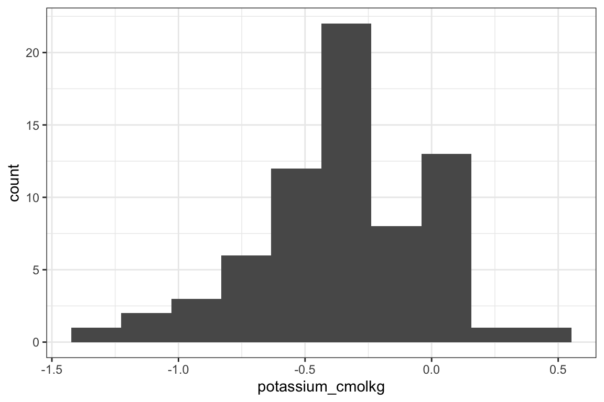
Or transform just the axis display, keeping the original units as labels rather than the log values:
data |>
ggplot(aes(x = potassium_cmolkg)) +
geom_histogram(bins=10) +
scale_x_log10()All soil properties
This generalizes the same log-scaled view to every property at once. pH_H20 is left out. It’s already a log scale. Logging it again would make its skew worse, not better.
soil_long <- data |>
select(!starts_with("wn_")) |>
pivot_longer(
where(is.numeric),
names_to = "soil_prop",
values_to = "value"
)soil_long |>
filter(soil_prop != "pH_H20") |>
ggplot(aes(x = value)) +
geom_histogram(bins=10) +
facet_wrap(~soil_prop, scales = "free_x") +
scale_x_log10()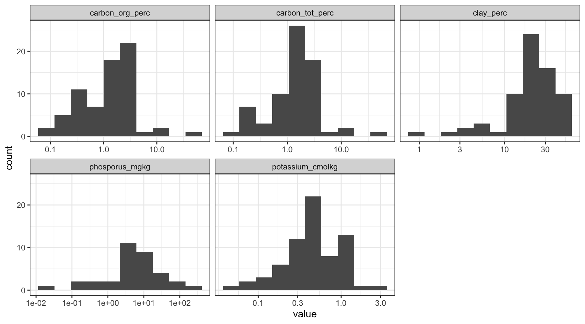
Soil properties QQ-plots
A QQ plot checks a variable against a normal distribution. Points that follow the diagonal line come from something close to normal. Points that curve away from it don’t.
soil_long |>
ggplot(aes(sample = value)) +
stat_qq(na.rm = TRUE) +
stat_qq_line(na.rm = TRUE) +
facet_wrap(~soil_prop, scales = "free")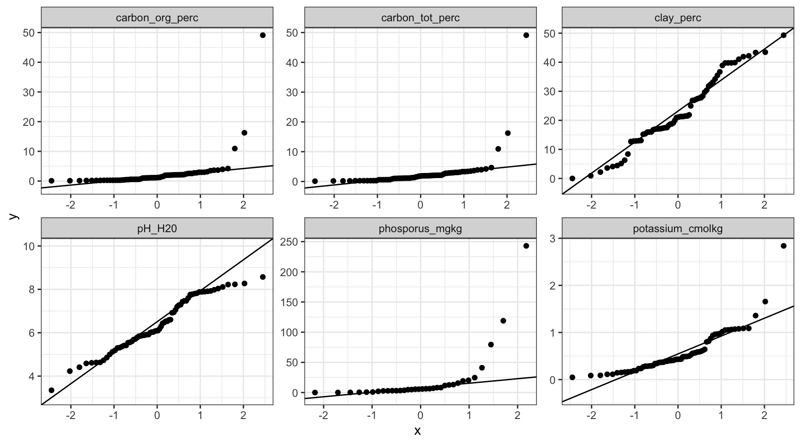
carbon_org_perc and carbon_tot_perc curve furthest from the line, the same properties 2-loading-data.qmd flagged potassium_cmolkg for, only more so. Log-transforming pulls most of them back toward it:
soil_long |>
filter(value > 0) |>
mutate(log_value = log(value)) |>
ggplot(aes(sample = log_value)) +
stat_qq(na.rm = TRUE) +
stat_qq_line(na.rm = TRUE) +
facet_wrap(~soil_prop, scales = "free")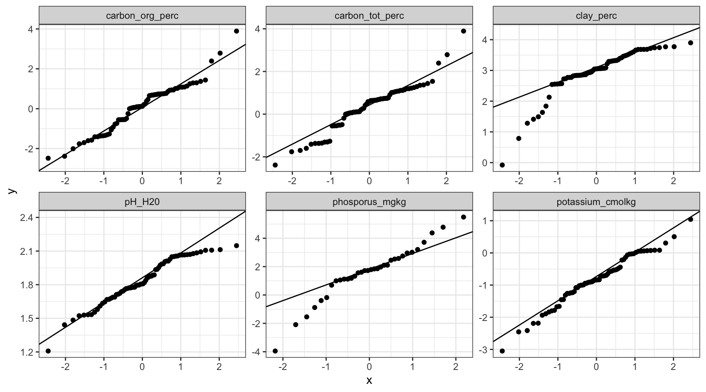
carbon_org_perc makes the clearest case. Its raw skewness is 6.4, against 2.3 for potassium_cmolkg. Log-transformed, that drops to 0.1. The range runs from 0.08% to 49%, a roughly 600-fold spread across 69 samples. Three reasons favor fitting a model on log10(carbon_org_perc) instead of the raw value.
A model fit on the raw scale can predict a negative carbon percentage. Back-transforming a log-scale prediction with 10^y never can.
Squared-error loss on the raw scale weighs every percentage point of error the same, wherever it falls on the scale. That lets the handful of high-carbon samples dominate the loss, since their absolute errors are bigger. On the log scale, the same absolute error costs more for a low-carbon sample than a high one. The model can’t just chase the few high values at the expense of everyone else.
Skewed variables like this one also tend to have variance that grows with the value. Most classical inference tools assume that variance stays constant across the range. The log transform tends to even it out.
There’s a cost too. Coefficients and metrics like RMSE come back in log units, not percent carbon. Reading them in the original units takes a deliberate back-transform.
Soil properties correlation
Organic carbon and phosphorus correlate on the log scale: r = 0.40 (p = 0.018, n = 34, using only samples with both measured). It isn’t a tight relationship. Soils richer in organic matter tend to hold more phosphorus too.
data |>
filter(carbon_org_perc > 0, phosporus_mgkg > 0) |>
ggplot(aes(
x = carbon_org_perc,
y = phosporus_mgkg
)) +
geom_point() +
scale_x_log10() +
scale_y_log10() +
labs(
x = "Organic carbon (%)",
y = "Phosphorus (mg/kg)"
)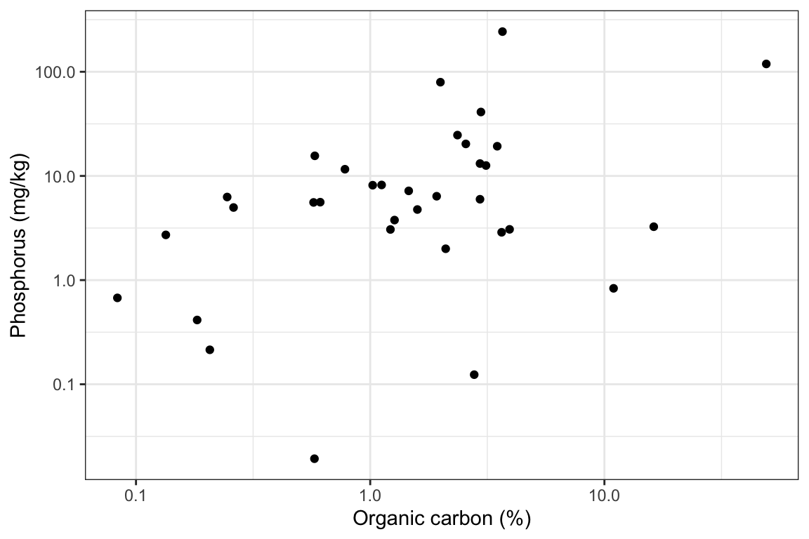
Spectra
All spectra
data |> plot_spectra()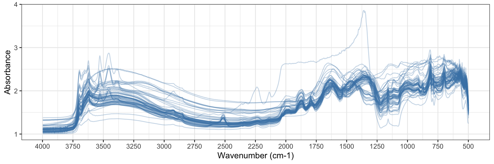
Unpacking plot_spectra()
plot_spectra() reshapes the wavenumber columns into long format, then builds the plot below in stages. Colouring every one of the 70 samples by ID, the first attempt, produces a legend nobody can read:
spectra <- data |>
pivot_longer(
cols = starts_with("wn_"),
names_to = "wavenumber",
names_prefix = "wn_",
names_transform = list(wavenumber = as.numeric),
values_to = "absorbance"
)ggplot(spectra, aes(wavenumber, absorbance, group = smp_id, colour = smp_id)) +
geom_line() +
scale_x_reverse() +
labs(
x = "Wavenumber",
y = "Absorbance",
colour = "Sample"
) +
theme_bw() +
guides(colour = guide_legend(nrow = 5, byrow = TRUE)) +
theme(legend.position = "bottom")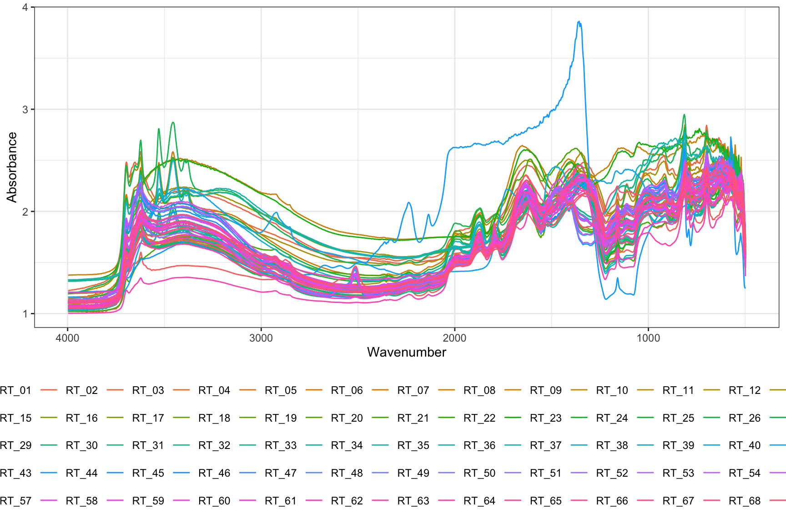
Dropping the per-sample colour and blending lines with alpha instead makes the overall shape visible:
ggplot(spectra, aes(wavenumber, absorbance, group = smp_id)) +
geom_line(alpha = 0.35, colour = "steelblue") +
scale_x_reverse() +
theme_bw()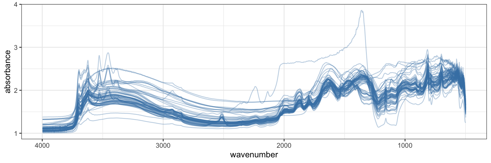
Tidying the axis breaks and labels gets to what plot_spectra() actually returns:
ggplot(spectra, aes(wavenumber, absorbance, group = smp_id)) +
geom_line(alpha = 0.35, colour = "steelblue") +
scale_x_reverse(
breaks = seq(500, 4000, by = 250),
minor_breaks = seq(500, 4000, by = 125)) +
labs(
x = "Wavenumber (cm-1)",
y = "Absorbance",
colour = "Sample") +
theme_bw()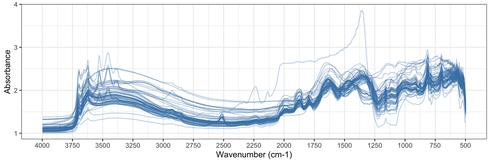
Colouring by organic carbon
Mean absorbance across the whole spectrum correlates weakly with organic carbon: r = 0.32, p = 0.007. Higher-carbon samples sit a little higher on the y-axis overall. Colouring by carbon_org_perc makes that pattern visible directly on the spectra:
ggplot(
spectra,
aes(
x = wavenumber,
y = absorbance,
group = smp_id,
colour = carbon_org_perc
)
) +
geom_line(alpha = 0.5) +
scale_x_reverse(
breaks = seq(500, 4000, by = 250),
minor_breaks = seq(500, 4000, by = 125)
) +
scale_colour_viridis_c(
name = "Organic carbon (%)",
na.value = "grey70"
) +
labs(
x = "Wavenumber (cm⁻¹)",
y = "Absorbance"
) +
# theme_bw() +
theme(legend.position = "bottom")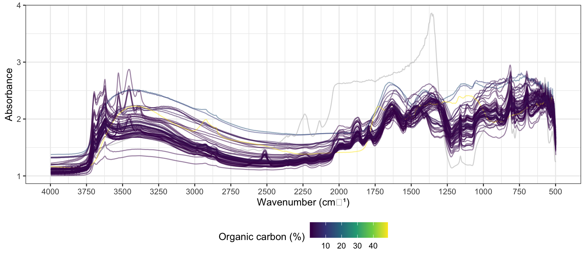
Grouping by carbon quartile
This splits the same idea into four groups instead of a continuous gradient, easier to compare by eye than shades of one colour:
spectra_grouped <- spectra |>
filter(!is.na(carbon_org_perc)) |>
mutate(
carbon_group = ntile(carbon_org_perc, 4),
carbon_group = factor(
carbon_group,
labels = c("Lowest", "Low–middle", "High–middle", "Highest")
)
)ggplot(
spectra_grouped,
aes(wavenumber, absorbance, group = smp_id)
) +
geom_line(alpha = 0.35, colour = "steelblue") +
facet_wrap(~ carbon_group) +
scale_x_reverse() +
labs(
x = "Wavenumber (cm⁻¹)",
y = "Absorbance",
title = "Spectra grouped by organic carbon"
)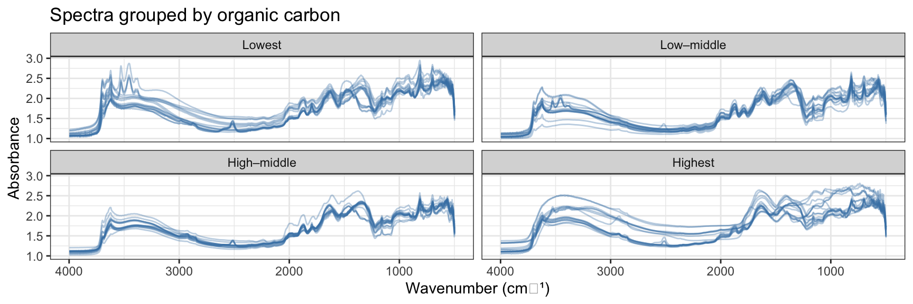
Zooming into a wavenumber range
This shows the full spectrum again, immediately before zooming in on 2200–2700 cm⁻¹. That’s a comparatively flat stretch. Mean absorbance there runs lower and less variable across samples (1.31, sd 0.14) than the spectrum as a whole (1.72, sd 0.17). coord_cartesian() crops the view without dropping any data, unlike setting axis limits directly.
spectra_no_na <- spectra |>
filter(!is.na(carbon_org_perc))ggplot(
spectra_no_na,
aes(wavenumber, absorbance, group = smp_id)
) +
geom_line(alpha = 0.35, colour = "steelblue") +
scale_x_reverse(
breaks = seq(500, 4000, by = 250),
minor_breaks = seq(500, 4000, by = 125)
) +
labs(
x = "Wavenumber (cm⁻¹)",
y = "Absorbance"
) +
theme_bw()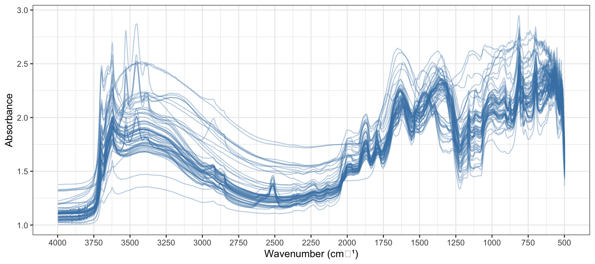
ggplot(
spectra_no_na,
aes(wavenumber, absorbance, group = smp_id)
) +
geom_line(alpha = 0.35, colour = "steelblue") +
scale_x_reverse(
breaks = seq(2200, 2700, by = 100),
minor_breaks = seq(2200, 2700, by = 50)
) +
coord_cartesian(xlim = c(2700, 2200)) +
labs(
x = "Wavenumber (cm⁻¹)",
y = "Absorbance"
) +
theme_bw()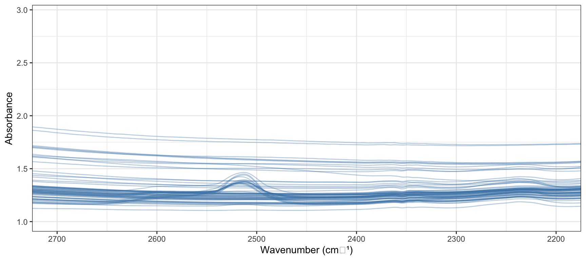